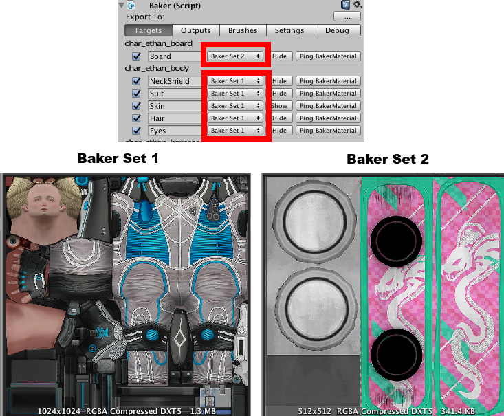
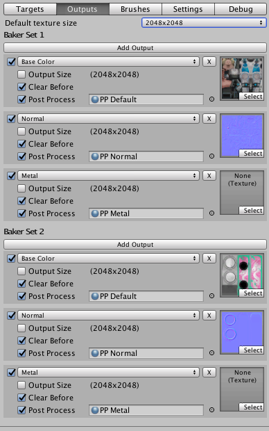

Getting started
Overview
The two main components of Texture Smith are the Baker and the Brush. The Baker manages a canvas for each child mesh you want to paint to. It creates a single set of textures based on the brushes painting to it. Then it applies them to the meshes materials. Brushes can paint to as few or as many Bakers as needed.
A GameObject may need multiple Bakers if you want to create multiple texture sets. This will be covered in here.
The Baker
First, add a Baker component to the parent GameObject of the meshes you want to paint to. If your GameObject or scene is going to have more than one Baker, you might want to enter a unique name in the components name field.

Targets
Open the Targets tab. It will list all child meshes. Select the ones you want to paint to that share a set of textures. Typically submeshes will all share the same textures. It doesn't matter if they don't share the same materials.
When you select one it will list the submeshes. The initial names will be based off of their materials. Since the submeshes I'm using share a material i'll have to manually enter some names. (This isn't necessary, but makes future tasks easier.)
 Click 'Select' to go to the meshes GameObject and in the RendererData component, enter some names. You may need to Toggle Visibility to figure out which mesh is which.
Click 'Select' to go to the meshes GameObject and in the RendererData component, enter some names. You may need to Toggle Visibility to figure out which mesh is which.
 And head back to the Baker component. Much better. Now select the submeshes you want to be paintable.
Much better. Now select the submeshes you want to paint to. You will get a list of textures used by it's material. To the right of their name is a drop down with texture usage types. Texture Smith will try to automatically asign these, but you might need to change them.
And head back to the Baker component. Much better. Now select the submeshes you want to be paintable.
Much better. Now select the submeshes you want to paint to. You will get a list of textures used by it's material. To the right of their name is a drop down with texture usage types. Texture Smith will try to automatically asign these, but you might need to change them.
Since all these submeshes use the same material you only have to select the textures for one of them. I just want to paint the Albedo, Normal Map, and Metal map. I didn't select the Eyes submesh, so it won't be painted to. 
Outputs
Close the Targets tab and open the Outputs tab. This lists the textures we will be outputing. Texture Smith will automatically set this up if you did the first step properly, so you can probably skip this section. For an indepth overview click here.
The usage type must correspond to the texture usage type you set in the Targets section.
The default post processing will fix edge seams. The normal map post processing also packs textures for the standard shader, so make sure it is enabled.

Ignore the other tabs for now. For in depth info on the Baker go here.
Creating a Brush
Create a new GameObject and add the Brush component. Open the Render To tab for a list of Bakers. Select a Baker for a list of submeshes.
For this Brush I only want to paint to the skin.

Ignore the Advanced Settings tab for now. First we need some textures. Brush Texture components start with BT_. Add BT_Default to your Brush.
Now click Add Texture for as many usages as you need. I want to paint to the BaseColor, the Normal, and the Metal. Then setup the textures.
Next, aim the brush where you want it to paint, and resize it.
 In the scene view GUI, click Bake to see results. Hit Revert to go bake to the original textures.
In the scene view GUI, click Bake to see results. Hit Revert to go bake to the original textures.

Enable Preview Mode
Having to Bake every time to see your changes is tedious. Select the Baker component and in Advanced Settings click the Preview Mode button.
Now add the AutoUpdatePreview component to your Brush, to have it update the preview any time it moves, rotates, or resizes.
The preview can only show one usage type at a time. You can select which one in the scene view GUI drop down.

Conclusion
With just a few tweaks of the Brush settings we can get neat results very fast.